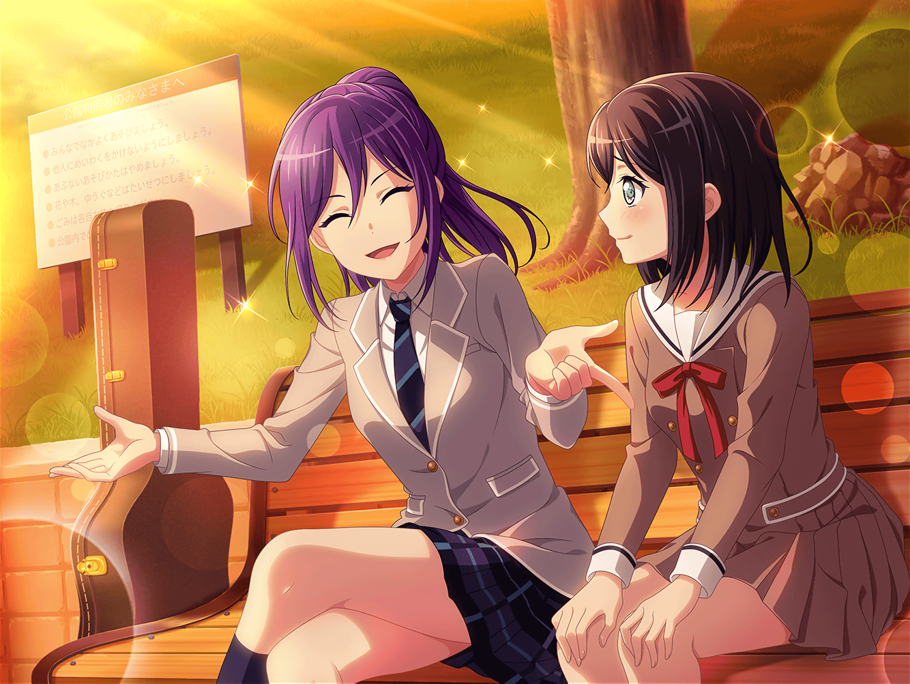

パレード終了後
花咲川スマイル遊園地 スタッフ控え室
薫
ふう……今日は最高のパフォーマンスを見せることができた。
我ながら満点をつけたいくらいだ
薫
おや、あそこにいるのは……？
薫
やあ、ミッシェル！ もう控え室に戻っていたんだね。
お疲れ様
ミッシェル
……
薫
ああ……まだ興奮が冷めないよ。
耳をすませばまだあの歓声が聞こえてくるような気がする。
ミッシェルもそう思わないかい？
ミッシェル
……
薫
ミッシェルも、静かに達成感を噛み締めているようだね。
本当に最高のライブだった
薫
とりわけミッシェルのパフォーマンスはいつにも
増して素晴らしいものだったよ。何か、心境の変化などが
あったのかい？
ミッシェル
……
薫
フフ……恥ずかしがらず教えてくれないかい？
君のパフォーマンスから、私も何かを得たいんだ
花音
あれ、薫さん。控え室で何して……って、ミッシェル……？
美咲
えっ……？ あ、あたしここにいますけど
薫
やあ、花音、美咲！
ちょうど今ミッシェルとパレードの感想を
語り合っていたところさ
花音
そ、そっかあ……
美咲
ミッシェルと、ね……
花音
ね、あの中に誰か入ってるとかってことは……
美咲
いや、ないと思う。空っぽの自信があります
薫
今日の感想は二人とも同じだったよ。
最高のパレードができたとね。
けれど、ミッシェルは肝心なことを話してくれないんだ
美咲
あー、そうなんだ……で、肝心のことって？
薫
今回のミッシェルのパフォーマンスは、いつにも増して
気合が入っていたように見えた。だから、なにか心境の
変化があったのか、と聞きたかったんだ
美咲
……！
薫
私もステージにあがる者として、
ぜひミッシェルから学びを得たいのだが……
花音
あ、あはは……
美咲
あ……あー、わかる！
あたしもミッシェルのパフォーマンスがすごくよかったなって
思っててさ
美咲
そ、それで、さっきあたしもミッシェルに聞いたんだよね。
何かあったのか？ って
花音
美咲ちゃん……！？
薫
そうだったのか。それで、美咲はなにか聞き出せたのかい？
美咲
うん、一応……
美咲
ミッシェルはね、遊園地ライブまでの間
いろいろ悩んでたんだって
美咲
ハロハピのために、ミッシェルは何ができるんだろう？
自分のやるべきことは、何なんだろう？ って
薫
ミッシェル……そうだったのか
美咲
でも、いろいろ考えたけど、ミッシェルができることは
ステージで最高のパフォーマンスをすることで
みーんなを笑顔にすること。そう気がついたって言ってた
美咲
みんなを笑顔にしたい、改めてその気持ちに気づいたからこそ、
最高のパフォーマンスができたんだって言ってたよ
薫
素晴らしい考えだ、ミッシェル！
美咲
あと、もう１つ言ってたことがあって……
美咲
いろいろ悩んで、つらいなーって思ったこともあったけど
どんな自分も自分。ステージで最高のパフォーマンスをすることで
誰かを幸せにできていたら……
美咲
それは胸を張れることなんだよって
薫
……！
薫
ああ……儚い……！
なんということだ……！
花音
薫さん、どうしたの？
薫
『どんな自分も自分』。
私も常に、この考えでいろいろな役に挑んでいるんだ
薫
ミッシェルと同じ考えをもって、
ステージに上がれていたとは……こんなに嬉しいことはないよ！
薫
そういえば以前、美咲には私のこの考え方を話したことがあったね
美咲
うん。そうだね。あたしも薫さんの考え方、
けっこう助けられてるよ
薫
ああ……！ なんと、儚さが押し寄せてくる！
私が美咲に影響を与えることができていたなんて！！
美咲
はは……薫さんちょっとおおげさだってば
薫
美咲やミッシェルにいい刺激をもらったよ。
次は、今回以上に儚いパフォーマンスをするさ
薫
ミッシェル、次は一緒に今日を越える
パフォーマンスをしよう！
ミッシェル
……
花音
ふふ。
ミッシェル、少し疲れているみたいだね
美咲
あー、うん。そうみたいですね
薫
ミッシェル、今日は本当にお疲れ様。
ゆっくり休んでくれ
花音
うん。お疲れ様、ミッシェル